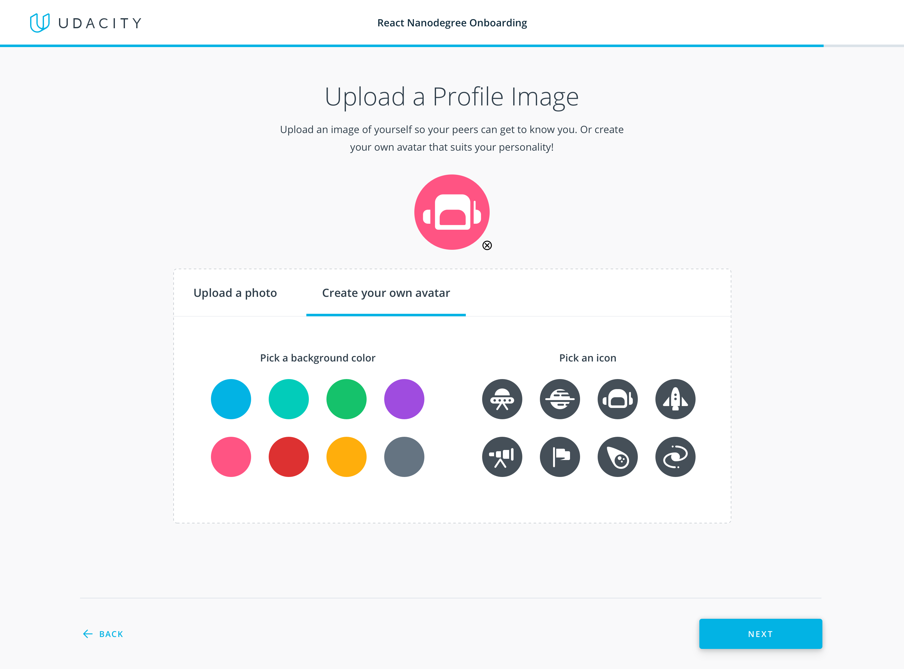

Product Design
Profile Image Upload
Creating engagement in Student Hub, the online student community.
My Role
- Product Designer
Timeline
- Jun. 2019 - Jul. 2019
Team
- Engineer, Product Manager
Responsibilities
- Visual Design, Interaction Design, UX/UI
Background
Student Hub is the chat platform that Udacity students use to communicate with other students and their mentor. It improves learning by providing an environment where students can collaborate with each other.
Currently in Student Hub, there is a low rate of students who upload a profile picture. The assumption is that by having a profile picture, it can lend to the appearance of an actively engaging chat platform to influence contribution. The Community team has identified this a high priority feature based on direct experience in prior online communities.
Pain Points
Very little people upload profile pictures. This is an opportunity for design because the discoverability for the current way is not clear; so we need to make it easy to find and do.
Hypothesis 1: having more profile pictures could increase engagement because you’re seeing real faces.
Hypothesis 2: when more people have their actual faces, it feels like more of a welcoming community.
Here is an example of a community channel called 30 Days of Udacity which is our top performing community channel. Only about 20% of the room participants have a profile picture uploaded. The scarcity of real photos is visually striking.
Objective
The objective is to encourage profile picture upload because I believe it can improve engagement in Student Hub, which in result, improves learning. In addition, I had the idea to allow users to quickly create a customized avatar in the cases where users are not comfortable uploading an image of themselves. My idea is to explore two touchpoints.
Welcome flow: Encourage new students to upload a profile picture and set their location during their onboarding process in the welcome flow. This action will help give a sense of personalization through profile building.
Settings page: Allow students to upload a profile picture and edit their location in their settings page. This will update automatically in Student Hub, Career portal and the EMC (enterprise).
Brainstorm
I began by sketching out some initial ideas for how the layout in the welcome flow could look. My idea was to then use this same layout in the settings page to ensure consistency throughout the entire product. After sketching, I then began creating some low fidelity mockups which I would then use to start building out the final visual design.
Explorations
I went through several rounds of feedback with other product designers, PM's, and engineers to ensure that the flow and interactions were intuitive and created a good user experience. Instead of using randomly generated identicons as a default image, I thought that using student initials could be a better solution.
Iteration 1
My initial idea was to have two options for students to choose from: either uploading an image or creating their own personalized avatar. In this exploration, I created a two column layout where users can use the radio button to select which option they would like. Some feedback I received was that having two separate image "previews" was confusing and takes up a lot of UI space. Also, that when selecting a color, they expected the background color to change but instead the icon color changed.
Iteration 2
For my next iteration, I created a single image preview and explored using a tab layout to create a cleaner UI. However, I received feedback that the tab layout hides information from the user and that having two options side by side creates a better experience.
Iteration 3
I then iterated on my original design of having two columns side by side and created a single image preview area. I wanted to further explore the need for the "drag and drop" interaction by researching other products that use this.
Constraints
After getting feedback from engineering, I realized there were some constraints I would need to think through.
1. User initials
Using user initials would be a problem because if there were two students with the same initials, there would be no distinguishing factor on who is who.
2. Avatar
Letting students create customized avatars poses a similar problem. My idea would only allow for 64 unique variations.
We still want to create a feature like this so that students can have fun being creative and also feel a sense of personalization in the product. We decided to launch this feature as a V2 and have just a photo upload launch as a MVP.
Prototype
For my final prototype, I added an image crop into the flow for students to adjust their picture. Students can use the zoom feature to adjust the frame as well.

Metrics
In order to notify current students that there was an update to the Settings page, I created a notification message in their classroom. This feature just launched so I am still waiting for data to measure the results of this update.
My hypothesis is that I will see a 30% increase in profile pictures uploaded. This in turn will result in more peer-to-peer messages being exchanged. Stay tuned for more updates as they come in!
Next Steps
Brainstorm ideas on how I can create a customized avatar experience that would allow for unique variations for each student. Continue to get student feedback about what keeps them engaged and moving forward in a course.